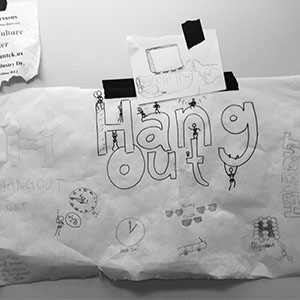
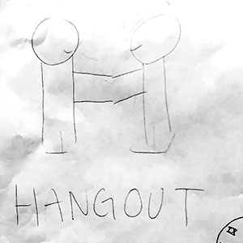
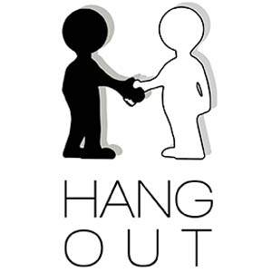
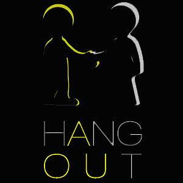

Manuel Flores, Kenneth Tran, Bhavik Upadhyaya, Judy Samatmanakit, David Williams, Christian Huerta
Role:
User Experience Researcher and Designer
Hangout is a plateform designed to connect people with each other based on location and activity. We strive to create a hub for all people of any interest and age group to be able to find an activity that is local for the user. We hope that through the use of our site people will be able to connect with others of similar interest and form new connections within your own city.
Personas and Storyboards
Personas and storyboards were created in order for the team to best understand the user's needs. Different scenarios were created to make sure that Hangout would cater to a certain group of individuals. At first, we targeted teenagers who would most likely be bored on their spare time. After creating different personas and scenarious, we realized that the age group could even expand to working adults. This was a valuable piece of information for us because it led us to realize that although our website is able to cater to a wide range of age group, it is still limited to a specific category of people who just want to hangout on their free time.
The Hangout logo graphic originated from the idea of wanting people to meet and interact. As shown below, the logo has progressed from being sketches to a full on design. Different versions (such as the black and white, color-filled, and inverted color) were created in order for us to see what would be best visually. We wanted something that was simple yet eye-catching for people to remember.




Prototype/Wireframe
Wireframe 1 - Rough wireframe of website (click image to download and view in full)